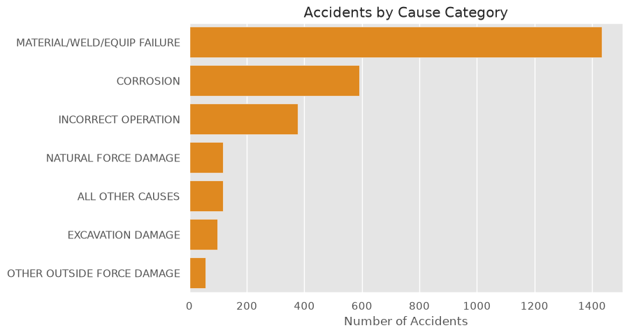
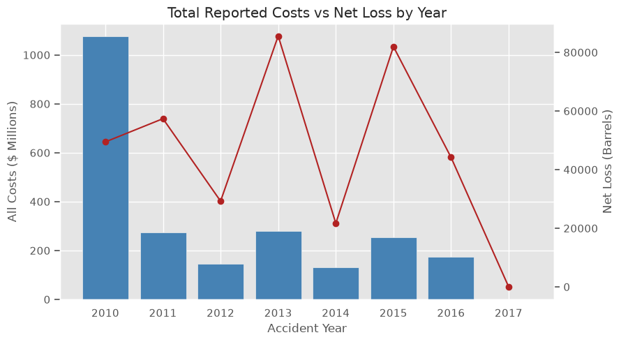
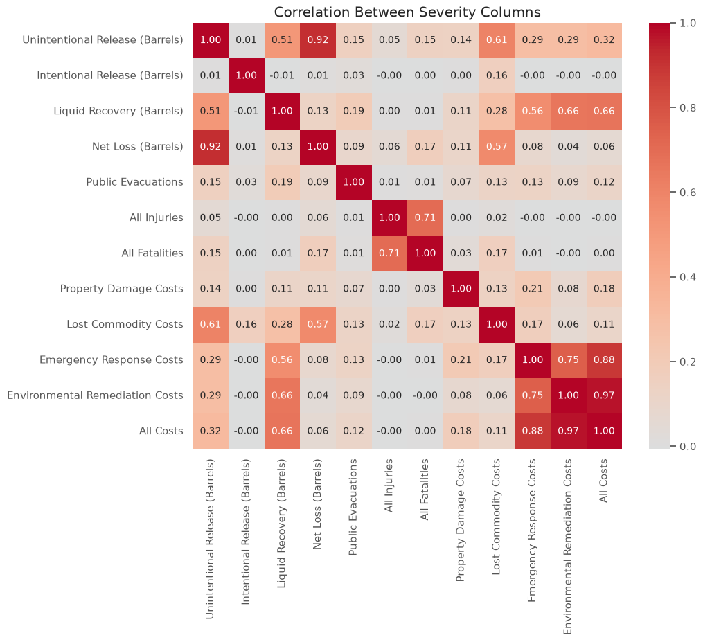
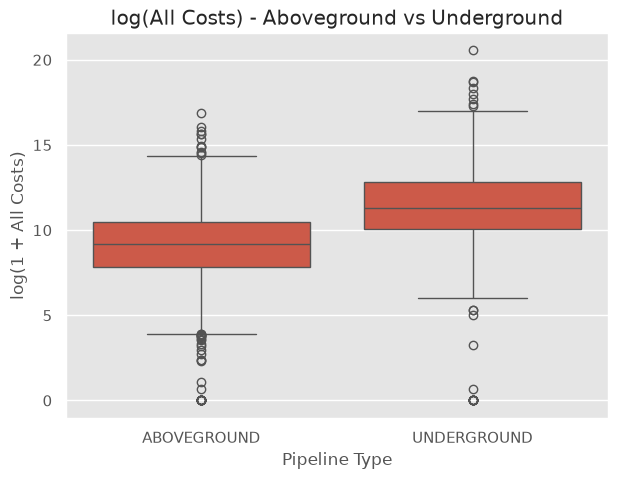
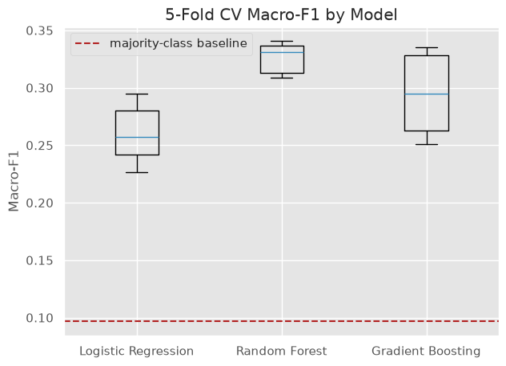
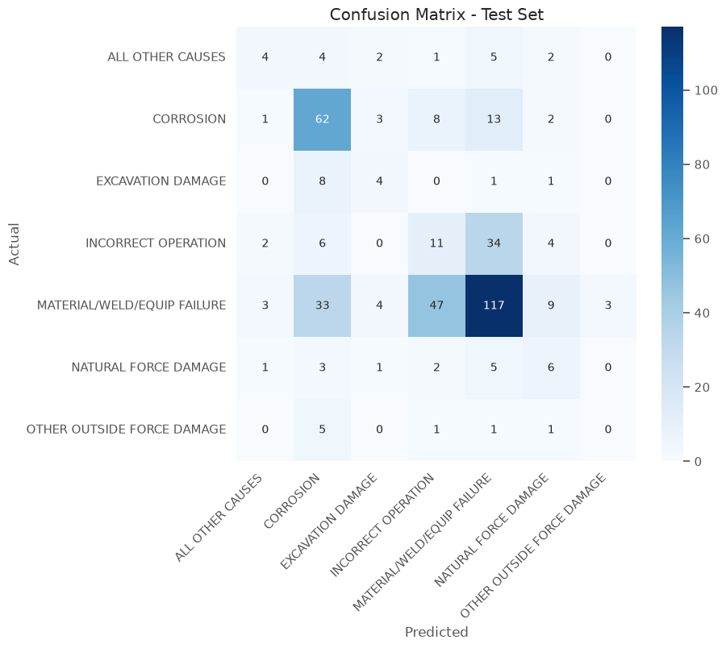
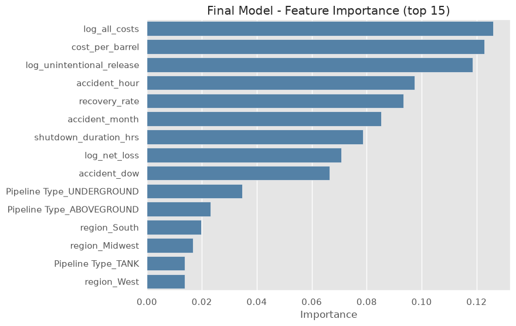
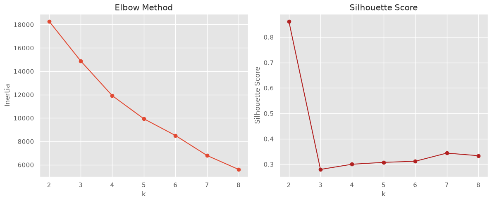
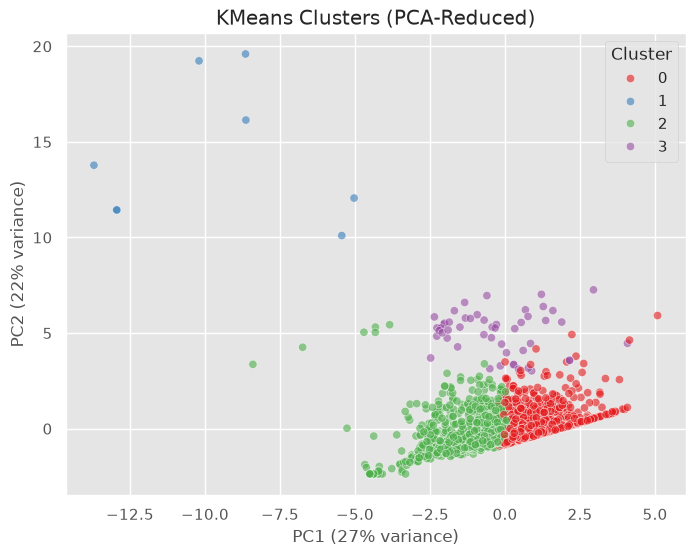

Data Science Project · PHMSA Hazardous Liquid Pipeline Accidents
Pipeline Accidents: EDA, Statistics, Feature Engineering, Modeling & Clustering
2,795 reported US hazardous-liquid pipeline accidents (2010–2017) — exploratory analysis, formal hypothesis tests, a supervised model that predicts accident cause, and an unsupervised look at how accidents cluster by severity, without ever using an injury label to build the clusters.
Source notebooks and data: github.com/Nik8x/pipeline_accidents
The dataset at a glance



2010 had the highest total reported cost despite a below-average net loss, while 2013 had the largest spill volume with fairly ordinary costs — yearly totals are driven by a handful of outlier incidents, not a steady trend. The correlation heatmap backs this up: spill volume and cost correlate at only r ≈ 0.06, a reminder that a bigger spill doesn't automatically mean a bigger bill.
Statistical testing
Formal hypothesis tests behind the EDA observations — every one of these is significant, but the effect sizes tell a more nuanced story than the p-values alone.

| Test | Result | p-value |
|---|---|---|
| Pearson correlation, spill volume vs cost | r = 0.062 | 0.0011 |
| Welch's t-test, log-cost: underground vs aboveground | t = 23.46 | 7.8×10-108 |
| ANOVA, log-cost across cause categories | F = 48.30 | 1.2×10-56 |
| Kruskal-Wallis, cost across cause categories | H = 271.3 | 1.1×10-55 |
| Chi-square, cause category × pipeline type | χ² = 787.8 | 1.2×10-155 |
| Chi-square, cause category × liquid type | χ² = 179.0 | 1.1×10-25 |
Underground pipe averages a log-cost of 11.37 vs 9.06 aboveground — consistent with the expense of excavation and soil/groundwater remediation. Cause category is statistically associated with both cost and pipeline type, though the tiny r for spill-vs-cost is a reminder that statistical significance doesn't imply a strong or causal relationship — these are large-sample tests, sensitive to even small real effects.
Predicting accident cause
Logistic Regression, Random Forest and Gradient Boosting, compared by 5-fold cross-validated macro-F1, then the winner tuned and evaluated once on a held-out test set.

| Model | CV macro-F1 |
|---|---|
| Majority-class baseline | 0.097 |
| Logistic Regression | 0.260 |
| Gradient Boosting | 0.294 |
| Random Forest (tuned) | 0.328 |


Tuned Random Forest reaches test macro-F1 = 0.314
(49% overall accuracy) against the ~0.10 majority-class baseline
— roughly a 3x improvement, but genuinely hard: OTHER
OUTSIDE FORCE DAMAGE (8 test examples) gets 0% recall, and the
features available (cost, volume, location, pipeline type) describe
accident consequences, not root-cause drivers like pipe age
or inspection history that aren't in this dataset.
Unsupervised: does severity cluster on its own?
KMeans and DBSCAN on severity features alone (cost, volume, shutdown duration, evacuation rate) — injury and fatality rates are checked against the clusters only afterward, never used to build them.


| Cluster | n | Avg cost | Injury rate | Fatality rate |
|---|---|---|---|---|
| 0 — routine, low-cost | 1,430 | $615K | 0% | 0% |
| 2 — routine, lower-cost | 1,306 | $51K | — | — |
| 3 — high-cost, large spill | 51 | $26.8M | — | — |
| 1 — small, severe | 8 | $2.1M | 75% | 100% |
Notebooks
Key findings
- Cost and spill volume don't move together year to year — 2010 had the highest total reported cost despite below-average net loss, while 2013 had the largest total spill volume with fairly ordinary costs. Yearly totals are driven by a handful of outlier incidents, not a steady trend.
- Underground pipe costs significantly more to fix — a Welch's t-test on log-cost between underground and aboveground accidents is significant at p < 0.001, consistent with the expense of excavation and soil/groundwater remediation.
- Cause category is associated with both cost and pipeline type — ANOVA and a chi-square test of independence are both significant (p ≈ 0), though the r ≈ 0.06 raw correlation between spill size and cost is a reminder that significance doesn't imply a strong or causal relationship.
- Predicting accident cause is genuinely hard — a tuned Random Forest reaches macro-F1 ≈ 0.31 against a ≈ 0.10 majority-class baseline, roughly a 3x improvement, but the features available (cost, volume, location) describe accident consequences, not root-cause drivers like pipe age or inspection history.
- Clustering finds a high-risk segment without ever seeing an injury label — KMeans on severity features alone isolates an 8-incident cluster with a 75% injury / 100% fatality rate. DBSCAN independently flags overlapping incidents as density "noise," with injury and fatality rates about 29x the dataset average among the flagged points.